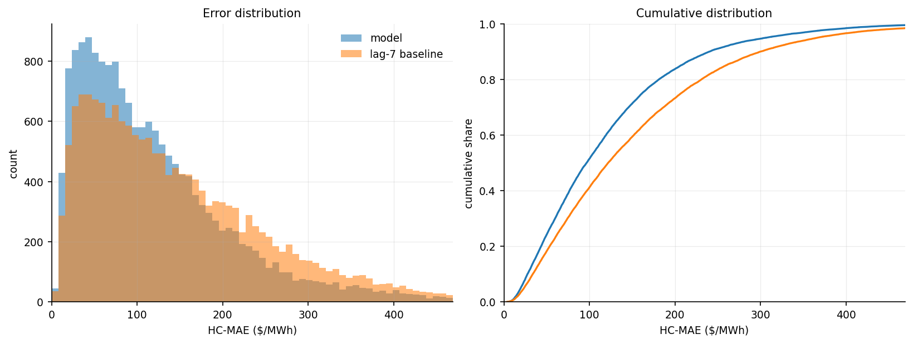
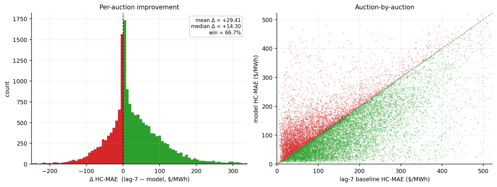
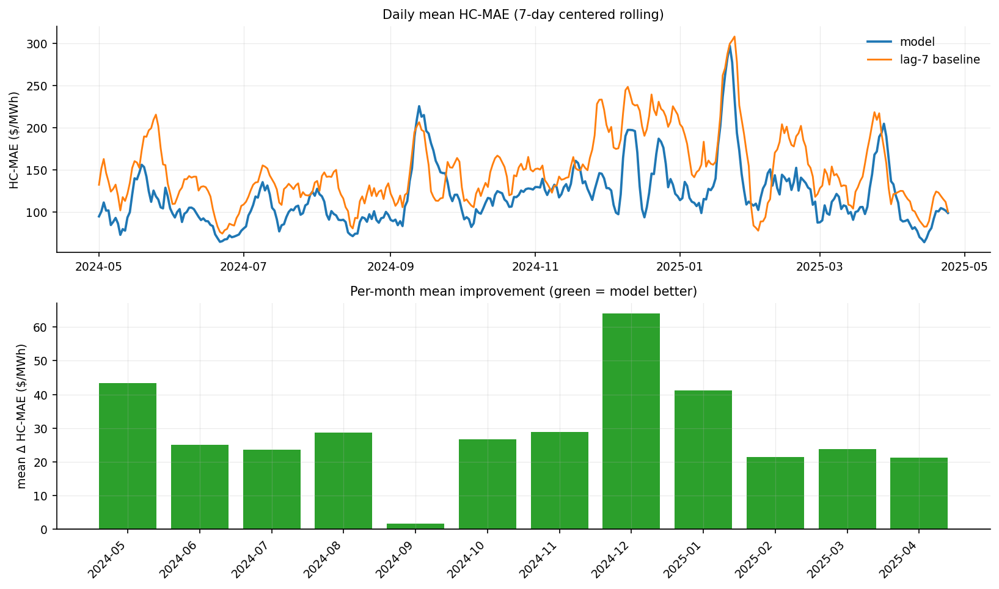
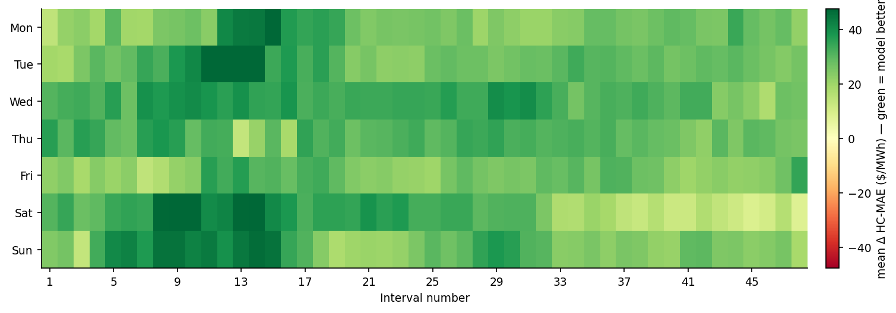
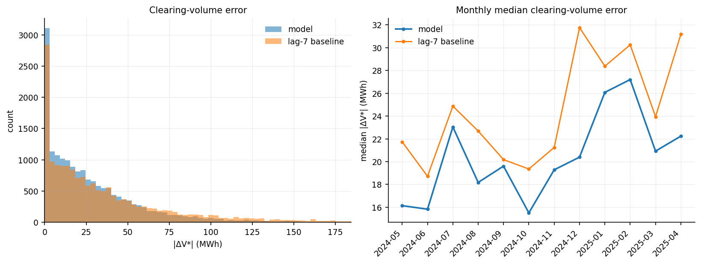
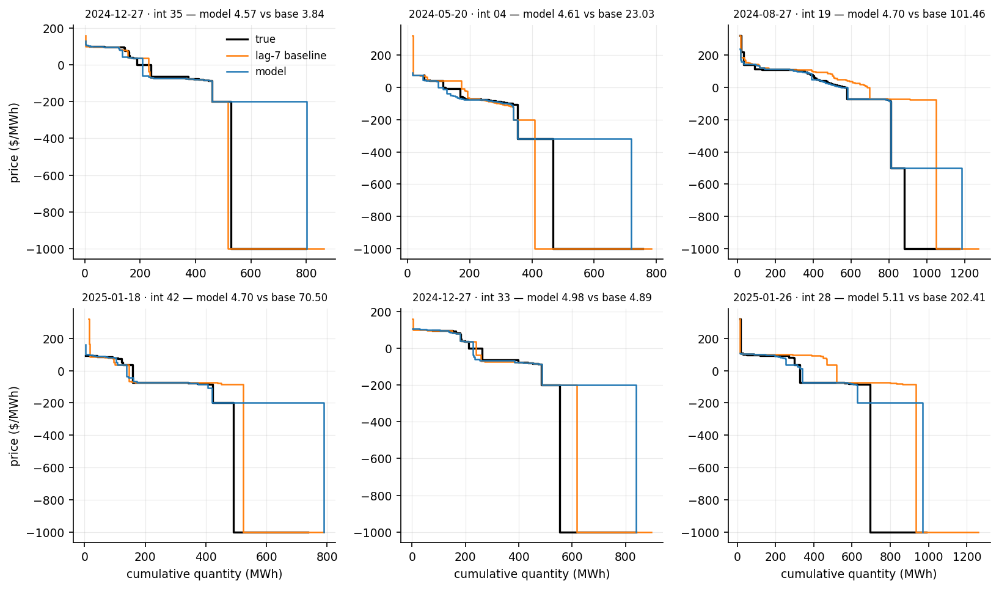
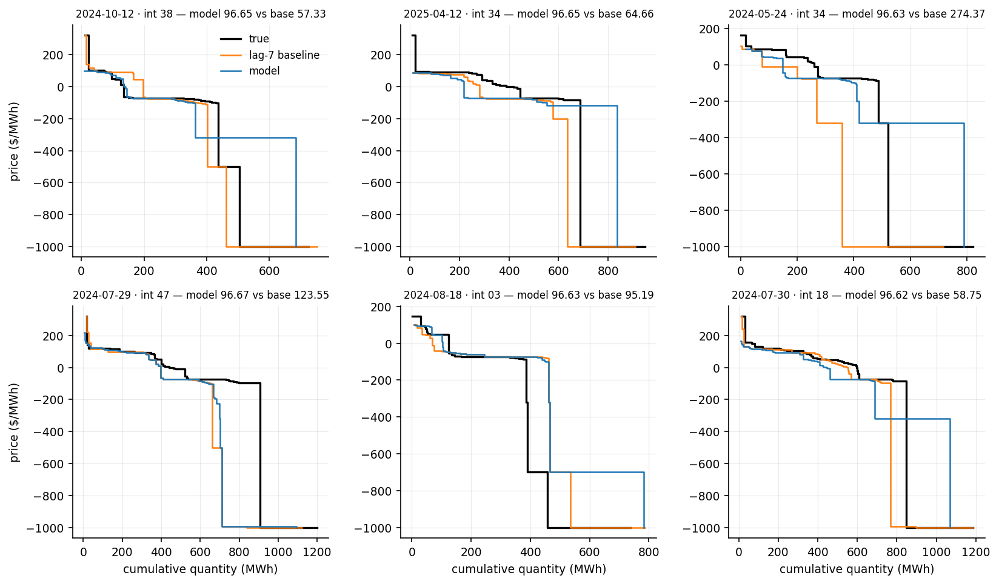
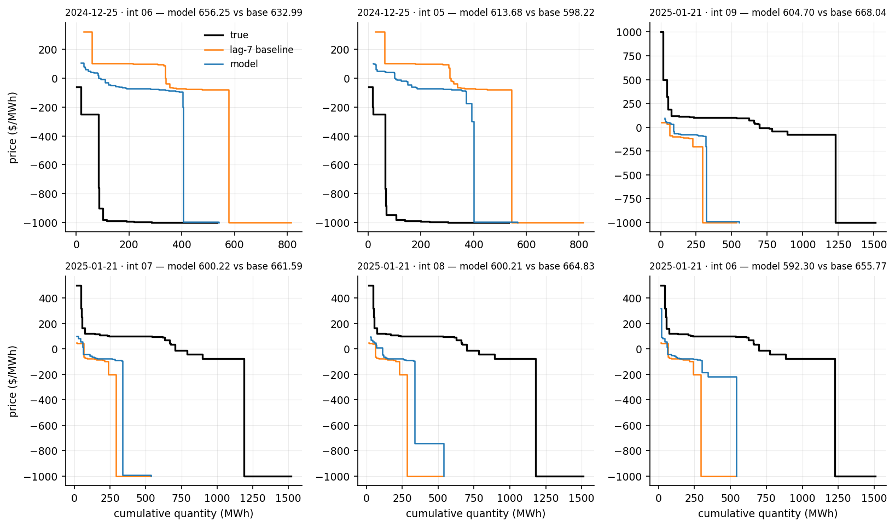

The model works on the v-grid embedding: the prices of a curve read at 64 volumes evenly spaced from 0 to a fixed volume cap. The cap is a high percentile of the total volume of the training auctions, 99 for demand and residual and 99.9 for supply, so the same position always means the same volume in every auction.
The market-state proxy holds thirteen daily numbers, all read from the day 7 days before the delivery day. Five describe that day's prices and volume: the mean, median and spread of the prices, the total volume, and the number of bid or offer rows. Two are read from that day's interp embeddings: the mean length of the 64-number vectors and their mean price range. The other six are trend numbers: the 7-day and 28-day trailing mean price, two price trends, a price z-score and a volume trend. The proxy also adds the day of year as a sine and a cosine, and Western Australian holiday flags.
7-day-ahead · test 2024-05-01 → 2025-04-24 · 17,232 auctions · reference: lag-7 baseline
| This model | lag-7 baseline | |
|---|---|---|
| Mean HC-MAE ($/MWh) | 119.56 | 148.97 |
| Median HC-MAE ($/MWh) | 96.65 | 121.92 |
| Win % vs lag-7 | 66.7% | - |
| Mean |ΔV*| (MWh) | 28.42 | 38.02 |
| Median |ΔV*| (MWh) | 19.97 | 23.72 |
| Mean |ΔP*| ($/MWh) | 27.56 | 30.29 |
| Median |ΔP*| ($/MWh) | 3.48 | 5.75 |




The predicted demand curve is crossed with the true supply curve, and the error is how far this moves the clearing point (V*, P*).
| This model | lag-7 baseline | |
|---|---|---|
| Mean |ΔV*| (MWh) | 28.42 | 38.02 |
| Median |ΔV*| (MWh) | 19.97 | 23.72 |
| Win % on |ΔV*| | 41.7% | - |
| Mean |ΔP*| ($/MWh) | 27.56 | 30.29 |
| Median |ΔP*| ($/MWh) | 3.48 | 5.75 |
A few price-floor auctions make the mean of |ΔP*| large, so the median is the summary.



